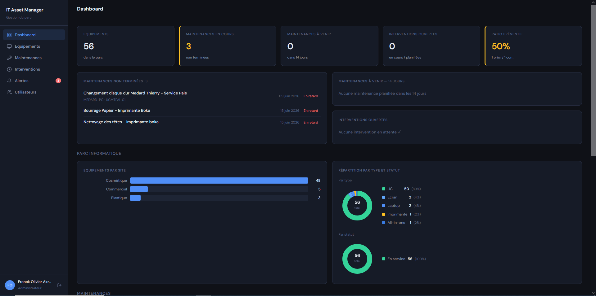
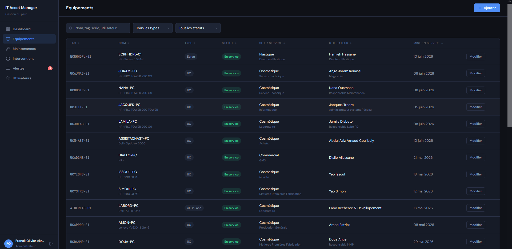
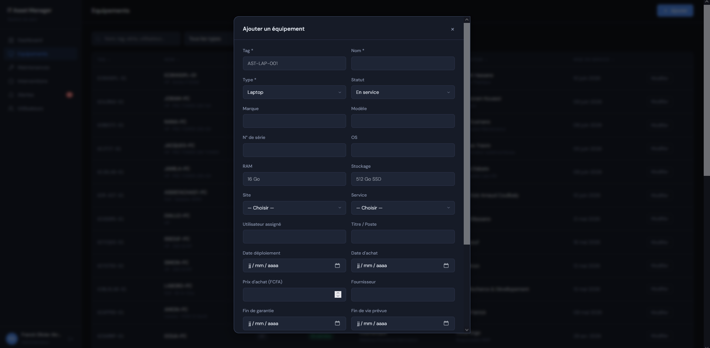
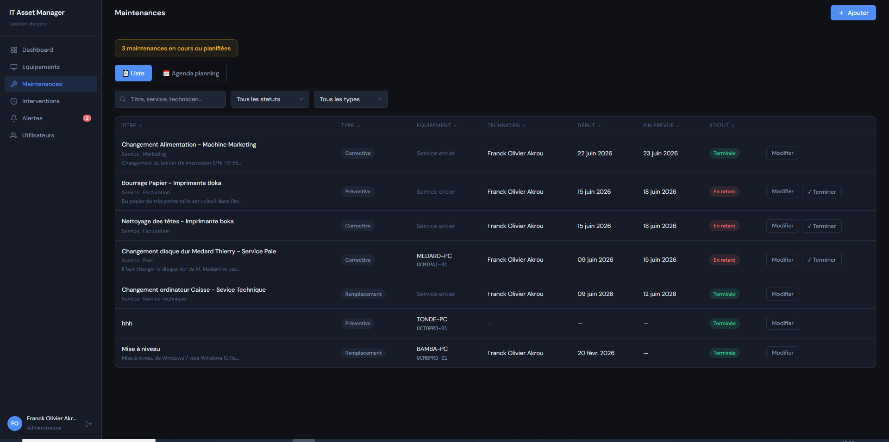
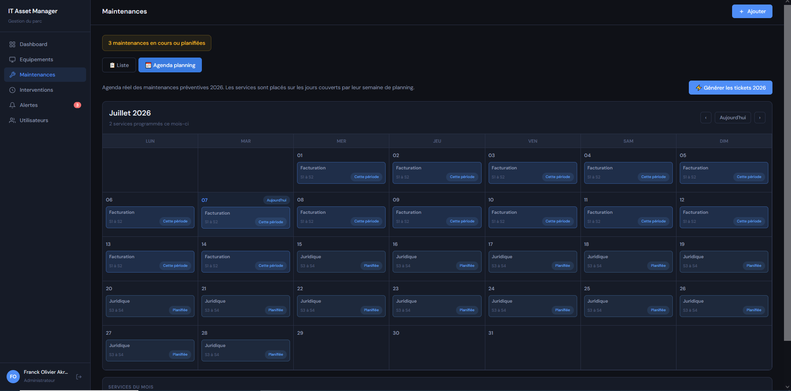
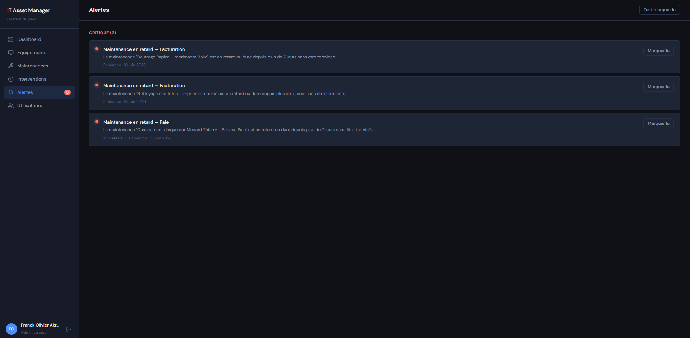

Problème résolu
Un parc informatique devient difficile à suivre quand les machines, les utilisateurs, les garanties, les maintenances et les interventions restent dispersés entre fichiers, messages et mémoire terrain.
Application métier / gestion de parc
Application web personnalisée pour centraliser l'inventaire informatique, suivre les maintenances, documenter les interventions et visualiser l'état du parc.
Un parc informatique devient difficile à suivre quand les machines, les utilisateurs, les garanties, les maintenances et les interventions restent dispersés entre fichiers, messages et mémoire terrain.
L'application propose un socle ITAM dédié : fiches équipements, statuts, sites/services, utilisateurs assignés, historique d'interventions, agenda de maintenance et tableaux de bord.
Étude de cas métier
Le dashboard donne une vue immédiate de l'état du parc : volumes d'équipements, maintenances, interventions et répartitions. Il sert de point d'entrée pour prioriser les actions IT.

La liste des équipements structure les informations essentielles : tag, nom, type, statut, site, service et utilisateur assigné. Elle remplace un suivi dispersé par une base consultable et filtrable.

Le formulaire capture les données utiles à l'exploitation : marque, modèle, numéro de série, OS, RAM, stockage, fournisseur, garantie, fin de vie et intervalle de maintenance.

La page maintenance permet de distinguer les actions préventives, correctives, remplacements et déploiements. Les statuts rendent les travaux ouverts, en cours ou terminés directement visibles.

L'agenda transforme les maintenances en planning exploitable. Il permet d'anticiper les périodes d'intervention par service et de générer les tickets associés au calendrier.

Les alertes rendent le parc actionnable : maintenances en retard, échéances proches ou éléments nécessitant une intervention. Elles évitent que les suivis critiques restent cachés dans les listes.

Le projet montre la capacité à partir d'un besoin métier réel et à produire une interface opérationnelle, orientée exploitation, avec données structurées et indicateurs utiles.